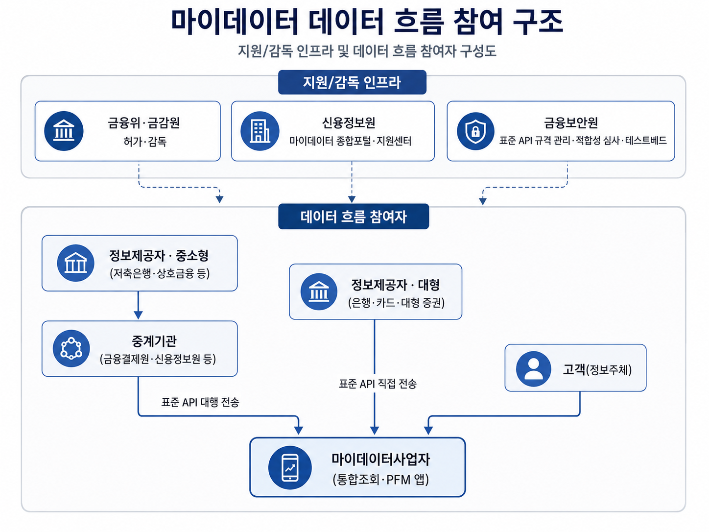
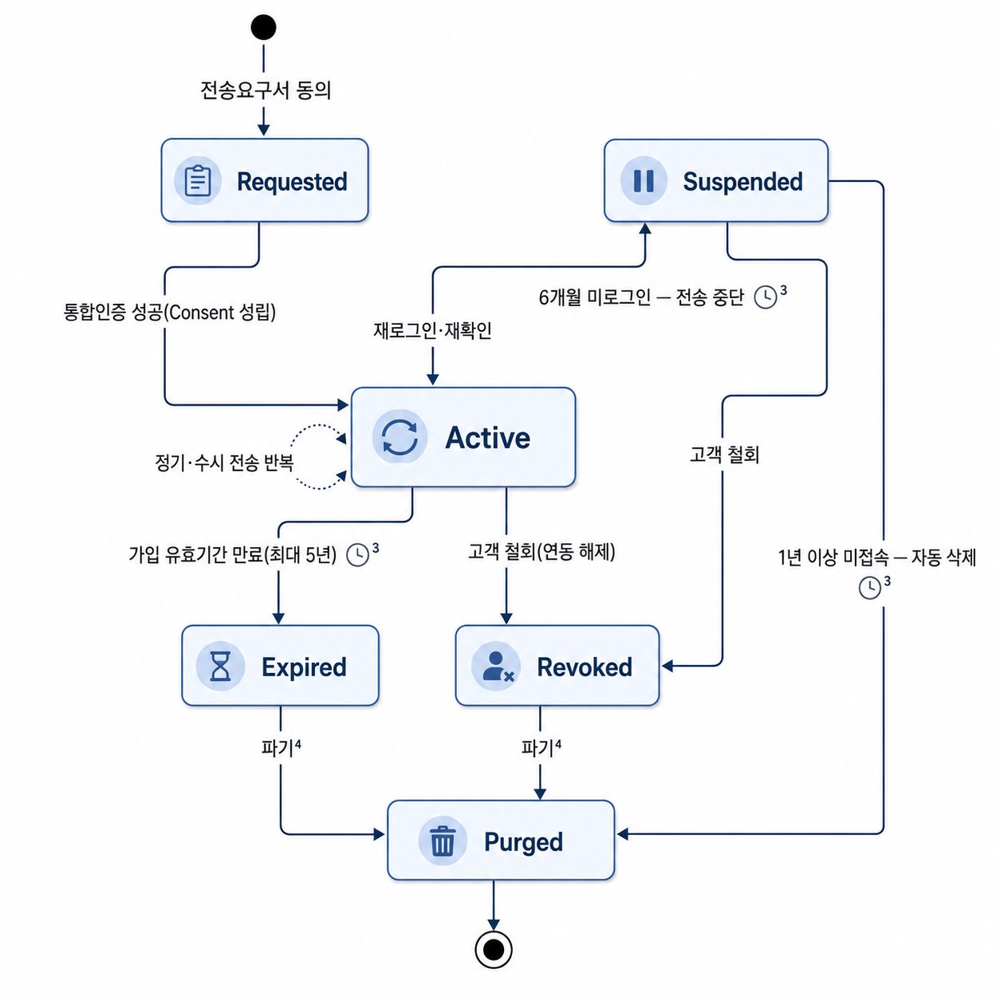

데이터는 권리(전송요구)로 흐르고,
동의(Consent)가 그 수명을 지배한다.
아래 10개 챕터로 마이데이터의 구조 · 수명주기 · 설계 원칙 · 가치사슬을 훑습니다.
다음 3가지 질문에 자신의 언어로 30초 안에 답할 수 있어야 합니다.
고객의 자격증명(ID/PW)을 통째로 위임받던 방식에서, 법적 권리에 기반한 표준 API 방식으로 전환. 위험의 성격이 대량 유출에서 국지적 타인정보 오조회로 이동했습니다.
전송 중단만으로 끝나지 않습니다. 동의 소멸 전파 → 전송 중단 → 배치 파기 → 이행 기록 로깅까지 4단계가 완료되어야 진짜 끝입니다.
금융상품을 제공하는 원천 기업(금융사)으로부터 수수료를 받습니다. 상품 자체에는 영향력이 없어 판매 전환율 관리가 어렵고, 금융사에 대한 협상력이 약합니다.
마이데이터 동의의 이용자 효용은 개인자산관리(PFM) 서비스 접근입니다.
압도적 시간 절약
연동 편의성
흩어진 자산
일괄 파악
소비 내역
자동 분류
맞춤형 인사이트
무료 비서 역할
생활 전반
효용 확대
마이데이터는 단순한 IT 기술 연동이 아니라, 개인의 '전송요구권'이라는 법적 권리 행사에서 출발합니다.
고객의 비밀번호 등 자격증명을 통째로 위임받아 대신 로그인, 데이터를 긁어오는 방식
정보주체가 법적 권리를 행사하여, 기관 간 표준화된 API로 필요한 데이터만 전송
→ 위험이 사라진 것이 아니라 성격이 바뀌었을 뿐입니다. 그래서 설계자는 항상 "이 조회가 진짜 소유자 본인의 것인가"를 검증해야 합니다.
지원·감독 인프라와 데이터 흐름 참여자로 구성됩니다. 각 항목에 마우스를 올려보세요.

사용자 편의를 위해 통합인증은 1건으로 처리하더라도, 백엔드의 동의 내역은 기관별 N건으로 개별 관리해야 합니다.
→ 이 원칙은 뒤에서 다룰 Consent 설계 5대 불변식의 2번째 원칙과 정확히 같은 이야기입니다.
고객의 동의(Consent)는 팝업 한 번이 아니라 1급 객체(first-class object)로 설계되어야 합니다. 상태와 전이 조건에 마우스를 올려보세요.

실시간 전송 중단과 야간 배치 파기 작업을 분리해서 대응합니다. 전송 중단은 즉시, 파기는 정해진 배치 주기로.
전송 중단으로 끝나지 않습니다. 기수집 사본 데이터의 파기와 증적(로깅) 완료까지가 진짜 끝입니다.
기획·검수 단계에서 타협 없이 항상 지켜야 하는 5가지 원칙. 검증 도구로 그대로 활용하세요.
소유자 검증 — 모든 조회는 subject(소유자) 검증을 통과해야 타인정보 오조회를 막을 수 있습니다.
1건 UX / N건 백엔드 — 통합인증은 1건이어도, 동의 내역은 기관별로 개별 관리해야 합니다.
철회 → 파기 + 증적 — 동의 철회는 반드시 파기 및 증적 절차로 이어져야 컴플라이언스 사고를 막습니다.
최소 수집 원칙 — 포괄 동의를 금지하고, 수집 범위는 목적에 필요한 최소한으로 좁혀야 합니다.
인사이트-중개 경계 — 데이터 기반 인사이트(조언)가 특정 상품의 권유(중개)로 슬쩍 넘어가지 않도록 소비자 보호 경계를 명확히 설정해야 합니다.
서비스 가치는 데이터 수집 자체가 아니라 융합 · 분류 · 개인화된 인사이트 도출에 있습니다.
플랫폼은 금융상품 자체에 영향을 줄 수 없어, 상품 판매로 이어지는 전환율 관리가 어렵습니다. 결과적으로 핀테크 플랫폼의 금융사 대상 협상력은 약합니다.
단순 조회(수집)는 이미 표준화되어 차별점이 되지 않습니다. 차별화는 데이터 융합 · 분류 · PFM 로직에서 만들어집니다.
"데이터 통제권"이라는 말이 주는 인상과, 시스템이 실제로 할 수 있는 일 사이에는 간극이 있습니다.
데이터 통제권을 행사하면 은행의 원본 데이터가 통째로 소멸하거나, 이미 비식별화되어 정산까지 끝난 파생물까지 소급 회수할 수 있다.
데이터 통제란 ① 흐름의 개폐(전송을 계속할지 멈출지) + ② 사본 파기 요구(마이데이터사업자가 보관 중인 사본을 지우도록 요청) — 딱 이 두 가지입니다.
→ 원본 은행 데이터의 소멸이나, 이미 처리·정산이 끝난 파생물의 소급 회수는 구조적으로 불가능합니다. PM은 이 경계를 고객에게 정확히 설명할 수 있어야 합니다.
나만의 "마이데이터 PM 지식 총정리" HTML 페이지를
"인터랙티브하게" 제작하기 — 지금 보고 있는 이 슬라이드가 그 첫 걸음입니다.
스크래핑 → 표준 API. 위험은 '대량 유출'에서 '국지적 오조회'로.
철회는 전송 중단이 아니라 파기 + 증적까지가 끝.
가치는 융합·분류·인사이트. 수익은 금융사 수수료, 협상력은 약함.
Home 키를 누르면 표지로, End 키를 누르면 이 슬라이드로 돌아옵니다.